An update to the Japanese Garden, aorund 10 years after it was built.
The ground cover is being removed in some of these images for the next iteration.
The large panorama is 270 degree view of 3 sides of it.
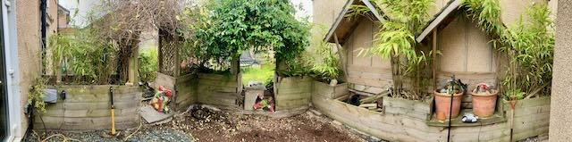
 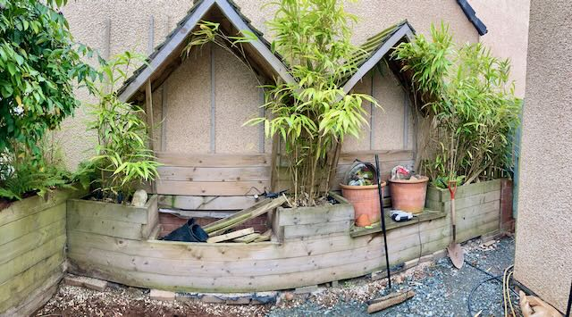
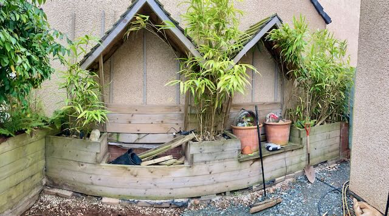
Various iterations of ground cover, last one was partially paved.
 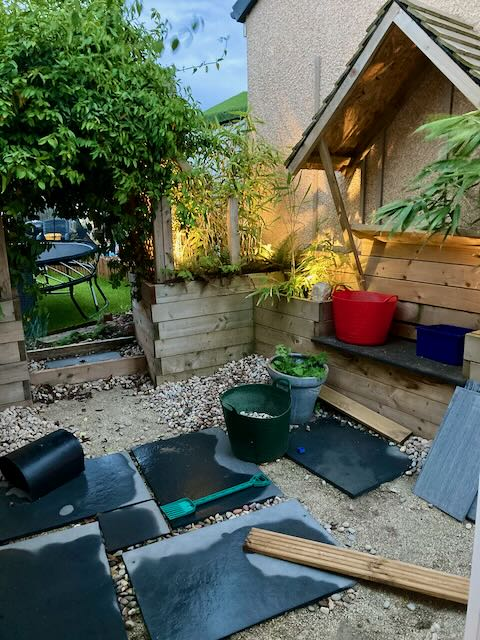
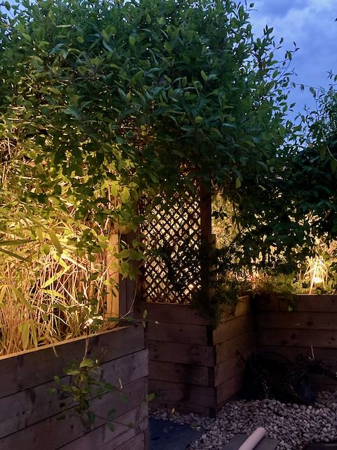
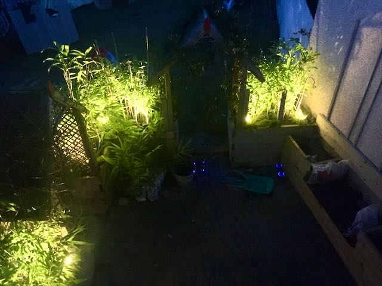
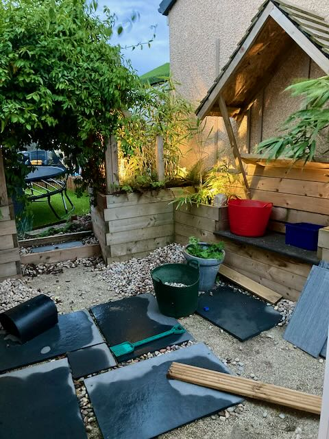
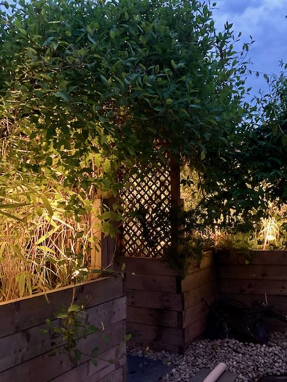
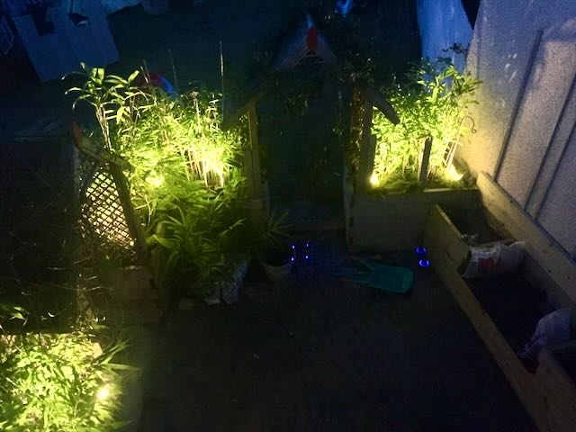
Older pictures during Construction
Then main structure nearly complete 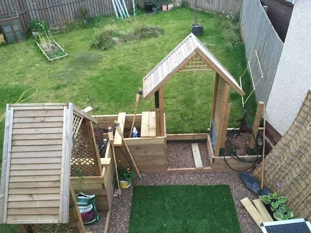 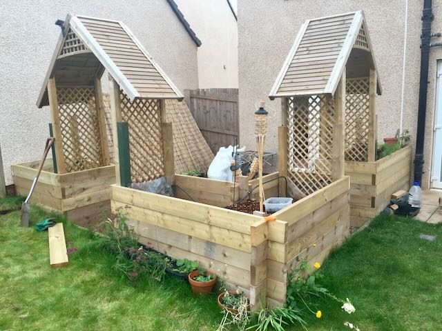
Leveling up the roofs for the seating area. The large panorama is a 270 degree view of 3 sides of it.